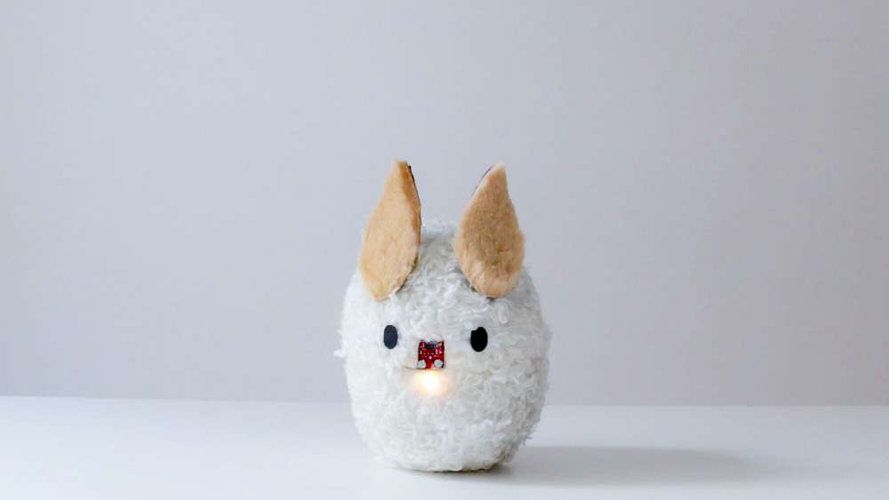
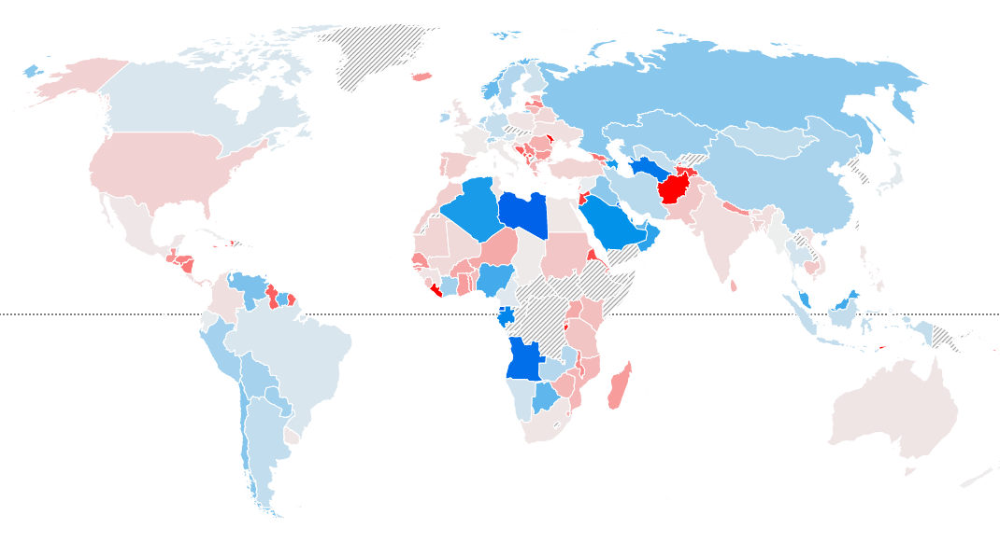
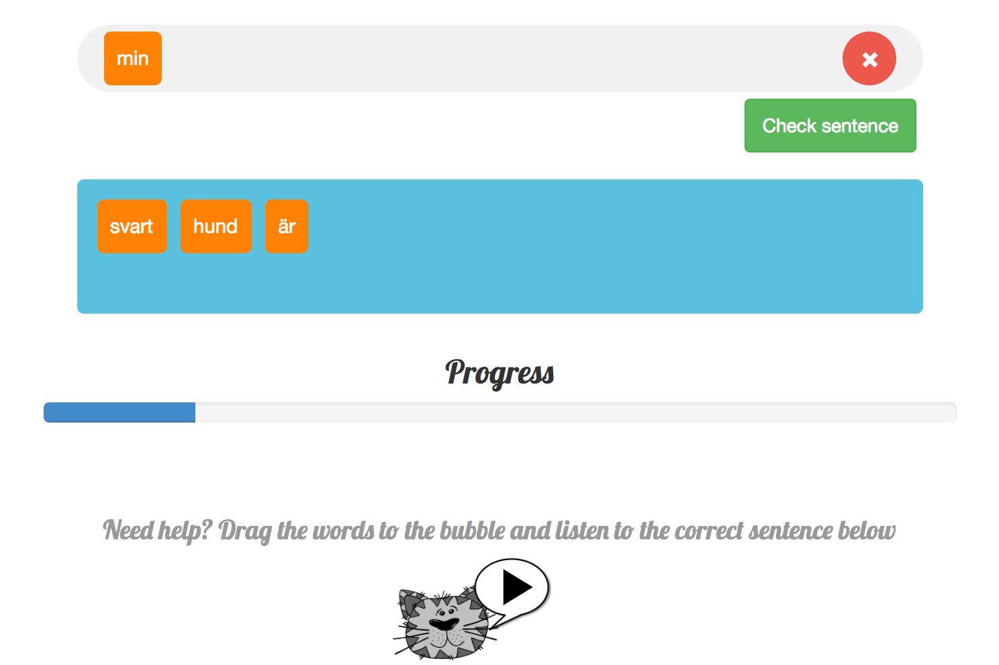
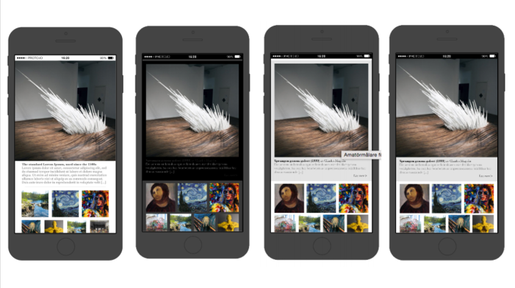

Projects

Simon
Course project in Physical Interaction Design
Tools: Arduino, C/C++, Physical Prototyping
Read more...

Enviromind
Course project in Information Visualization
Tools: D3.js, HTML, CSS, JS
Read more...

Fabulous Swedish
Chourse project in Interaction Programming
Tools: Angular.js, MVC, HTML, CSS, JS
Read more...

AR-Business Card
Course project in Multimodal Interactions
Tools: Unity, Vuforia
Read more...

Application Prototype
Course Project in HCI
Tools: Prototyping, Evaluation, User studies, Fields studies, Proto.io
Read more...